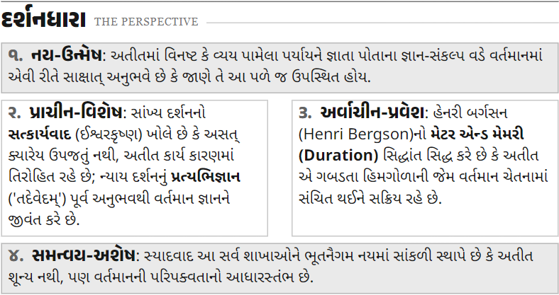
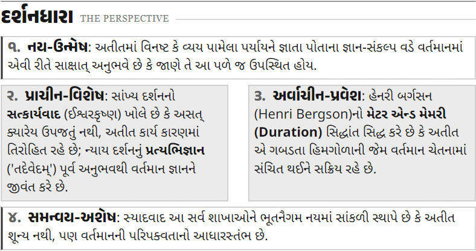
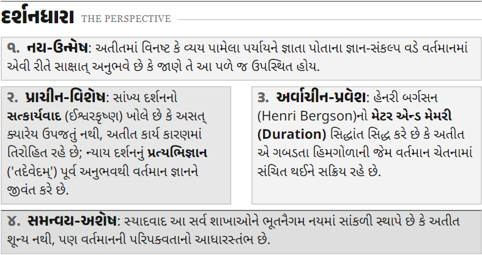

A · ઉપર-નીચે gray
નય-ઉન્મેષ અને સમન્વય-અશેષ gray. વચ્ચેની બંને columns સફેદ.

નય-ચક્ષુ · ડિઝાઇન સમીક્ષા r04
ઉપર નય-ઉન્મેષ · વચ્ચે પ્રાચીન-વિશેષ / અર્વાચીન-પ્રવેશ · નીચે સમન્વય-અશેષ
ચાલુ મુખ્ય HTML — હાલમાં Aનય-ઉન્મેષ અને સમન્વય-અશેષ gray. વચ્ચેની બંને columns સફેદ.

ઉપર અને નીચે સફેદ. પ્રાચીન-વિશેષ અને અર્વાચીન-પ્રવેશ gray.

હળવો gray, વચ્ચે અલગ gray tones અને નીચે થોડો ઘેરો gray.
